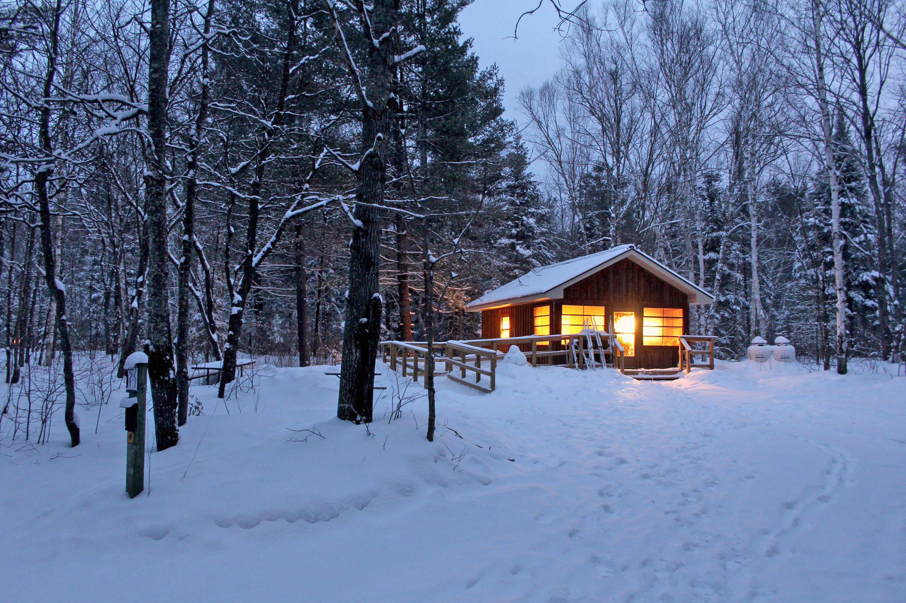

Winter

Winter is the coldest season of the year in polar and temperate zones (winter does not occur in the tropical zone). Some facts:
- It occurs after autumn and before spring in each year.
- Winter is caused by the axis of the Earth in that hemisphere being oriented away from the Sun.
- Different cultures define different dates as the start of winter, and some use a definition based on weather.
- When it is winter in the Northern Hemisphere, it is summer in the Southern Hemisphere, and vice versa.
- In many regions, winter is associated with snow and freezing temperatures.
All Seasons!